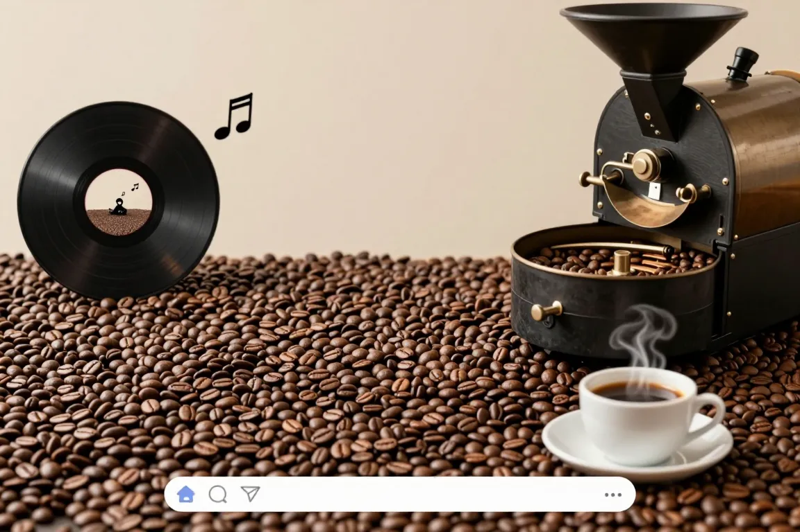

internet · 2016–now · also: Musical.ly clip, TikTok dance, Lip-sync video
A vertical clip of one person who mimes a song or does a short dance in front of a phone, with a rotating record disc and a lyric line. It grew from the Musical.ly app in 2014 and moved to TikTok in 2016 and 2018.

Core thesis
One person, one song hook and one move: the clip works when the body and the beat are the only content.
Design principles
Shoot at 1080 x 1920 px with one subject, centred, at 60% to 75% of the frame height.
Cut the clip to 15 s, with the loop point on a beat so the end meets the start.
Place a spinning record disc 48 px wide at the bottom right with a 4 s turn.
Set the lyric line in 44 px bold white caps with a 3 px black outline, at 70% of the frame height.
Add a pink-to-cyan accent bar of 6 px under the caption and keep it at 100% width.
Light the face with a ring light: a round catch-light of 20 px in each eye.
Flash a 4-frame colour pulse (#FE2C55 then #25F4EE) on each strong beat.